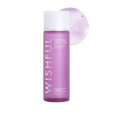

Huda Beauty does not have a dedicated "face wash" product line, but the brand offers various cleansers and skincare products suitable for different skin types and concerns, including those addressing oil control and gentle cleansing. The Huda Beauty blog features articles on skincare routines, including double cleansing techniques and product recommendations for various skin types.
Price:36$
Serum
Huda Beauty serums are known for being fragrance-free and addressing concerns like dryness and hyperpigmentation/dark spots. They are designed to hydrate the skin, reduce dark spots and blemishes, and minimize skin pores.

Price:47$
Cream
Huda Beauty serums are known for being fragrance-free and addressing concerns like dryness and hyperpigmentation/dark spots. They are designed to hydrate the skin, reduce dark spots and blemishes, and minimize skin pores.